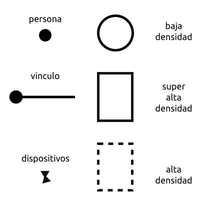
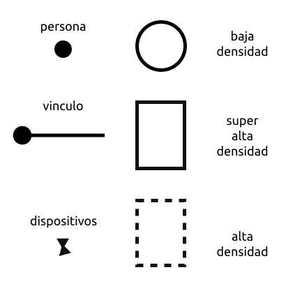

Mivimo es una intalación artística audio-visual, inmersiva e interactiva que propone habitar un espacio contra-cultural de perdida de control, baja velocidad e incomodidad.
El proyecto
Descripción breve del proyecto
-
Definición del tipo y formato de obra
Mivimo es una instalación audiovisual, inmersiva e interactiva.
-
Modo de vinculación con el espectador
Los asistentes pueden vincularse en tres niveles: un nivel de baja-densidad en el cual se recorren el perímetro y pueden solo acceder a una limitada cantidad de información manifestada en sombras y reflejos, un nivel intermedio de alta-densidad inmersivo en el cual acepta ingresar en el espacio de incomodidad conectados (y limitados) por un vínculo con el exterior que les provee cierto grado de comodidad y un tercer nivel profundo de super-alta-densidad el cual contiene los dispositivos interactivos, sin vínculos con el exterior.
![Imagen 01, muestra un esquema conceptual de como se configura la obra. Desde afuera hacia adentro, un circulo representa el perimetro exterior de la obra, seguido de un cuadrado de linea de puntos representando el primer area de la obra donde hay circulos conectados con una linea al exterior del cuadrado de linea de puntos pero todavia dentro del interior del circulo perimetral. Dentro del cuadrado de linea de luntos hay otro cuadrado más, de linea solida, representando el area mas central de la obra. En el centro mismo de este cuadrado se encuantran dos triangulos parcialmente superpuestos y ligeramente rotados.](./assets/mivimo-esquema_01a.svg) 

-
Tipo de interacción planteada
En el nivel de baja-densidad el visitante observa esa especie de pantalla analógica (Magdalena Molinari), puede recorrer el perímetro de la obra fotografiarla y observar (limitado, analogía de la caverna de platón, pero invertida) lo que ocurre en el interior. En el nivel de densidad-alta (por la cantidad de humo) el visitante tiene una posición y movilidad limitadas por su vínculo con el mundo exterior, en este caso un sistema que le provee de aire fresco en el cual le permite experimentar con cierta comodidad el espacio y observar más de cerca lo que ocurre, es en este nivel que se ubican los dispositivos sonoros. En el nivel de densidad ultra-alta se encuentra la máquina de humo y los dispositivos que producen las luces, los cuales están preparados para estar en contacto con los visitantes, estos dispositivos tienen un cierto grado de interactividad y también generan sombras y efectos que son vistos en las capas superficiales.
Fundamentación / Marco conceptual
-
Concepción e ideas fundadoras
-
Motivaciones
-
Antecedentes
-
Referentes artísticos y conceptuales
- Magdalena Molinari y sus pantallas y dispositivos lumínicos analógicos.
- Hartmut Rosa y sus concepto de resonancia, lo incontrolable
- Byung-Chul_Han y sus referencias a la velocidad del mundo contemporáneo, los rituales.
- Lab212 y sus experimentaciones visuales.
- Silvio Lang, sus ideas sobre el cuerpo y el espacio de la fiesta
- Gala Grabowski y sus experimentaciones corporales, los procesos de inducción a estados frenéticos.
- El BDSM y la resignificación de lo placentero o no placentero
-
Relación con el contexto